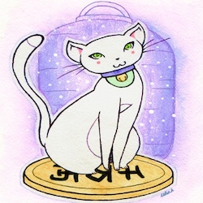

Oct. 3-5, 2014 @ the Matteson Community Center, in Matteson, IL
Welcome!
Welcome back to Maneki Neko Con. We've upgraded to three days of fun for our third year!
Maneki—What?!?

“Meow?” Maneki Neko mascot drawing by Asha Brumfield, PSC artist
Maneki Neko Con is an all-ages science fiction, fantasy, and Japanese animation - anime - gaming, comics, and miscellaneous geeky fandom convention in Chicago's south suburbs, sponsored by the Prairie State College Anime/Sci-Fi Club. and the not-for-profit Lucky Cat Educational Enterprises, LLC. The name refers to the Maneki Neko or “Lucky Cat” which is the organization mascot. It's a time for fun, friends, and all things anime, sci-fi and fantasy, steampunk, furry fandom, or gaming-related. Attendees can look forward to panels (classes/workshops), games (tabletop, live-action, and videogames), vendors, an art show, costume contests, and much more.
This year we are holding the convention at the Matteson Community Center in Matteson, Illinois — a southwest suburb of Chicago. The community center website can be found here
Pre-registration ends (and the registration price goes up) Sunday, Sept. 21st, 2014, at midnight, so register today.
Please Note:
If you are a student or military personell, we want to thank you and honor you for your hard work and service. Please be sure to present your student or military ID to validate your discount at the time of pick-up for pre-reg. If valid ID is not provided, a $5 surcharge may be added at the door.
Who?
Why you, of course! Interested in being involved this year? We could use your help. You can work staff, volunteer services, teach a class, sell your wares, enter the art show, writing competition, game tournaments, and/or costume contest. Are you a teacher or a professional? Would you like to help by being one of our judges?